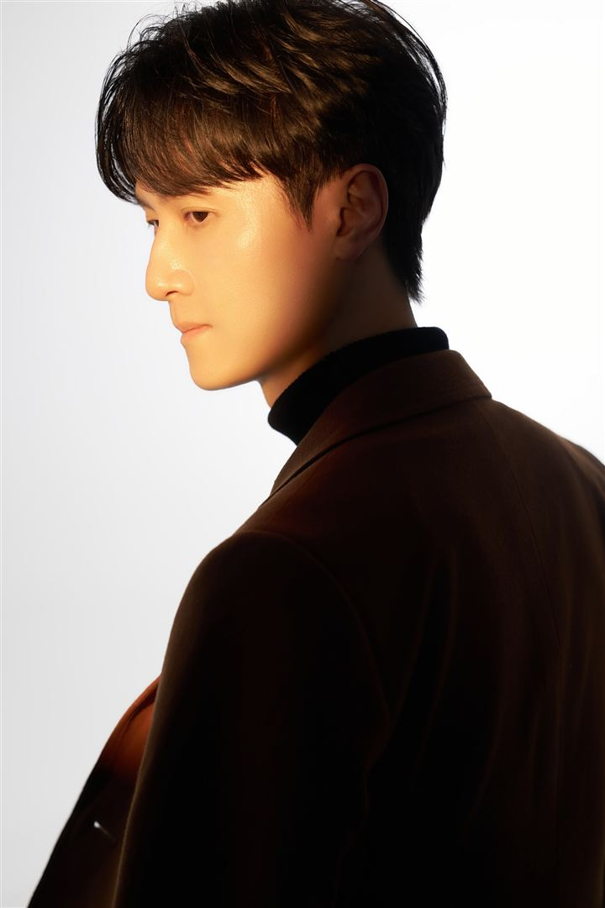

關於
我是 Robert Huang，一個在生活與工作之間持續觀察、思考、並試圖把混亂轉化成系統的人。
側臉照是我本人在2025 年 12 月時，拍攝於台北某影像工作室。
誰在寫
筆名瀨川永（Segawa Naga），本名 Robert，是一位台灣證券業的 Operations Analyst。
如果你也是習慣想得比較深的人，希望在這裡讀到的東西，能讓你少一點內耗，並發現「 原來不只我這樣想 」。
虛構與真實的界線
陳雙宇（Julian）與永瀨子琦（Ginni）是虛構的數位分身，協助演出根據真實事件與對話改編的情節，並一律去除人物識別細節；角色視覺形象為 AI 生成。